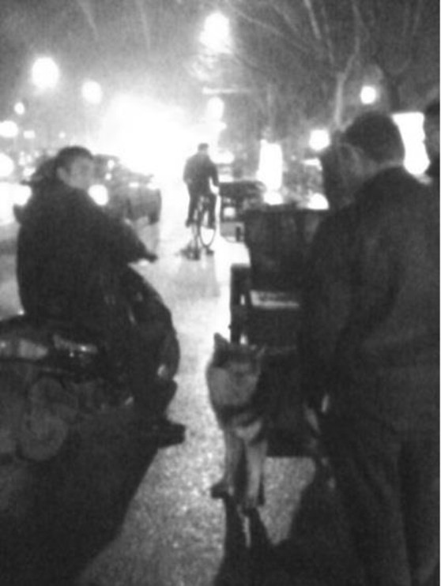
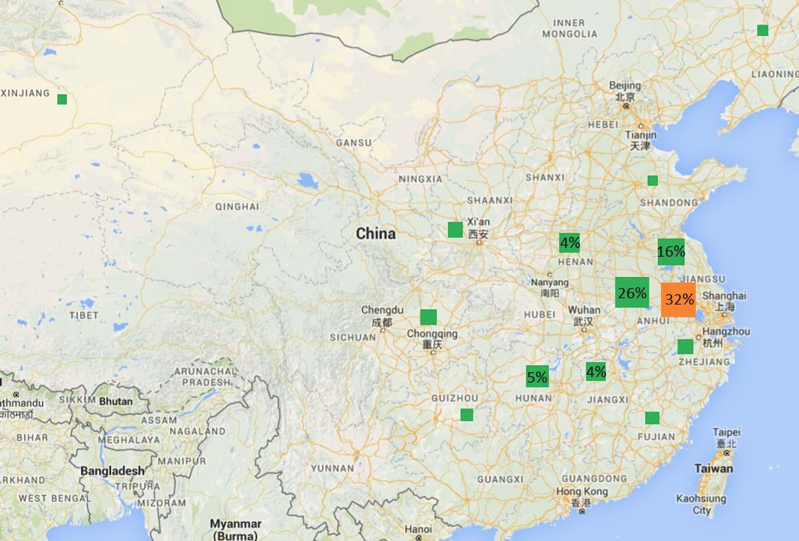
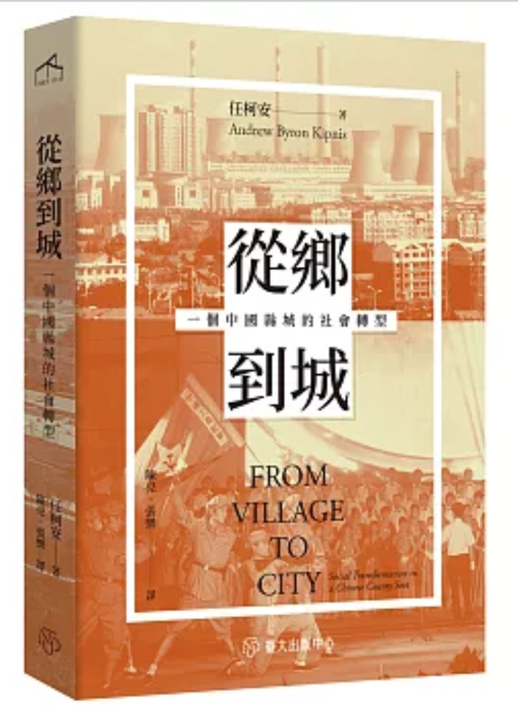
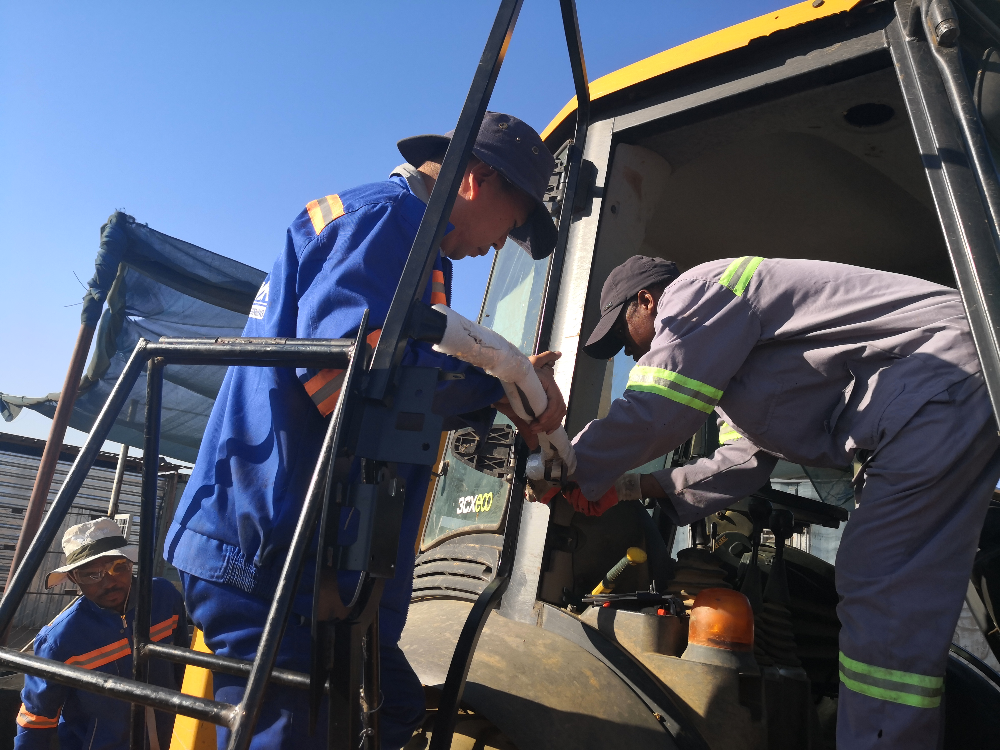
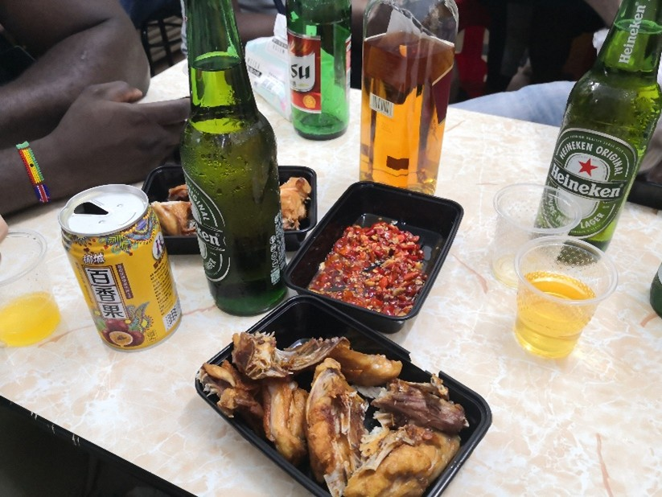
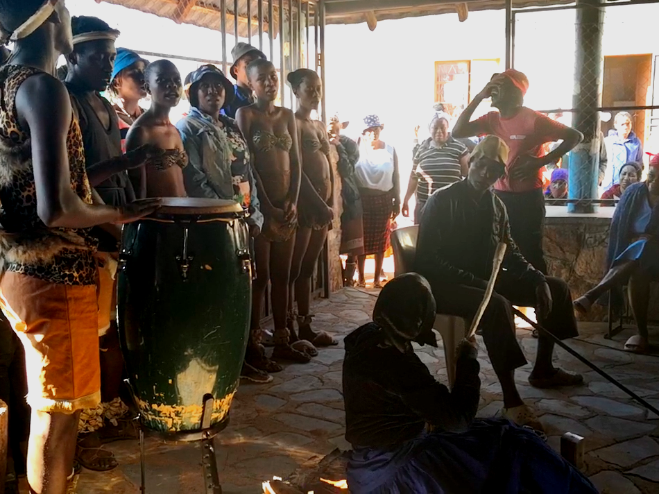

Getting by in Urban China
This doctoral thesis takes you into a night market on the edge of Nanjing to explore how migrant vendors survive city life. It shows how they rely on relationships—whether with officials, local toughs, or each other—to “get by,” and how this shapes their identities, gender roles, and everyday strategies. It introduces the idea of hun (muddling through) as a key way to understand migrant life in urban China.

Rural Migrants in the Informal Economy of Urbanising China
This article examines the hidden side of China’s rapid urbanisation by focusing on rural migrants working in informal economies. It highlights how their lives are shaped by insecurity and exclusion, while official narratives often gloss over these realities to present development in a positive light.

From Village to City
Andrew Kipnis, From Village to City: Social Transformation in a Chinese County Seat.
Translated by Liang Chen and M. Bai.
Taipei: Taiwan National University Press, 2021.
Revisiting China’s Rural Urbanisation
Daming Zhou, Revisiting China’s Rural Urbanisation: A Pearl River Delta Region Perspective.
Translated by Liang Chen.
London: Routledge, 2021.
Strained Technology Transfer in Ethiopia
This study examines Chinese investment in Ethiopia and whether it supports industrial development. It shows that while skills are transferred through workplace training, the process is slow and uneven, shaped by power relations, labour tensions, and corporate priorities rather than ideals of development cooperation. At the heart of this tension lies confidence in industrial standards within a global hierarchy.
Forthcoming, The China Review

Chinese Employers in Botswana and Their Impact on Local Workers
This article explores the everyday interactions between Chinese employers and local workers in Botswana. It reveals both opportunities and tensions, showing not only how economic inequalities shape labour relations in a globalising African economy, but also how Chinese actors navigate the postcolonial conditions in Botswana.

Governing Strangers in Guangzhou
Focusing on African migrants in Guangzhou, this article examines how cities manage foreign communities. It explores issues of policing, belonging, and informal economies. By drawing comparisons between Guinean and Nigerian sojourners, it offers insight into how African transnationals are treated differently because of historical factors.
University of Botswana Reform
This chapter investigates university strikes in Botswana during COVID‑19. It shows how economic pressures and long-term reforms have reshaped higher education, leading to tensions over pay, governance, and working conditions, and highlighting the effects of neoliberal reforms on African universities.

Indigenising Museum Practices in Botswana
This article argues that localised Western curatorial practices are inseparable from Indigenous traditions. It shows how local institutions such as age groups and youth troupes play a key role in collecting, performing, and preserving heritage.
Afar Travel Logs
This travel-based ethnographic piece documents how a new road in Ethiopia’s Afar region is transforming local life. It shows how infrastructure reshapes mobility, livelihoods, and belief systems.